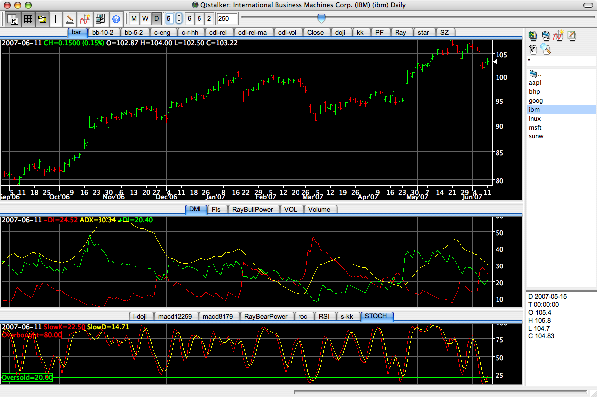
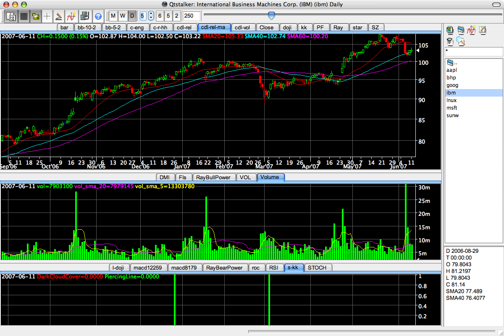

2008-04-19 Release 0.36
Qtstalker is a user friendly Technical Analysis package for GNU/Linux (and hence other Unix-like systems). Similar to commercial wares such as Metastock, Supercharts and Tradestation. Keeps to a lean, simple design for speed, portability, and low resource usage. Because it uses a plugin model, Qtstalker can easily be extended.
Qtstalker is 100% free software, distributed under the terms of the GNU GPL. An active development community is continually adding new features. We appreciate your input towards creating a world-class GNU/Linux TA package.
Features
- A point-and-click object-oriented graphical user interface.
- Chart types include line, bar and candlestick.
- Customizable colors. Logarithmic and linear arithmetic scaling. Scale to screen.
- Indicators plugins include MACD, MAs, Bollinger Bands, RSI, and dozens more. Provides access to the TA-Lib library of common functions.
- A simple scripting facility to create custom indicators. This powerfully enables combination of different plots in one indicator and combining of other indicators and calculations.
- A special indicator "ExScript" enables external scripts to pass data in.
- An "Indicator Summary" tool shows a table of all indicator parameters from all active indicators. It also writes the data to XML output for use by external programs.
- Chart drawing objects: trendlines, buy/sell arrows, horizontal
and vertical lines, fibonacci retracement lines, text and cycles.
- Quote plugins download data from online sources such as Yahoo, CME, NYBOT.
- Data import plugins for plain-text CSV files.
- The "Plugin" architecture for quotes and indicators enables easy future extensibility.
- Minute, daily, weekly and monthly chart compression options.
- Various data classes to support for investment types such as stocks, futures, indices, ratios and spreads.
- A back testing function allowing indicator performance tests using actual trading data.
- A very basic portfolio manager. Good for tracking open positions. (Suggestions welcome.)
- A Scanner that can scan the qtstalker database for charts that meet a user defined criteria.
- A paper trading mode enabling users to practice trading without risking capital.
Screenshots
|  |  |
{kind=link}
{kind=link}